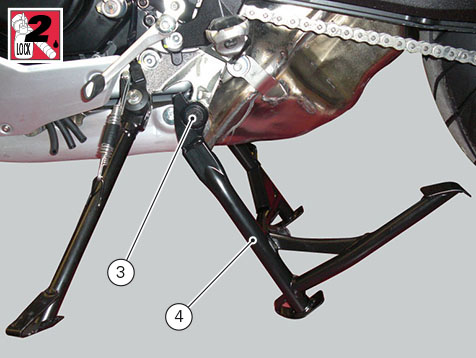
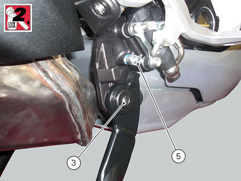
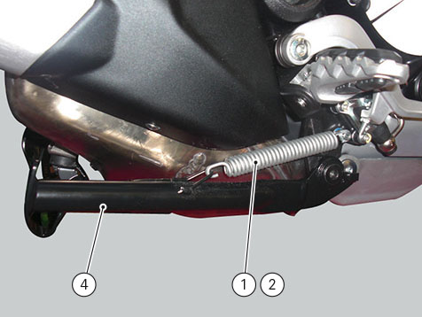

Refitting the centre stand
Apply the recommended threadlocker to the screws (3).
Refit centre stand (4), and start screws (3) and tighten to a torque of 18 Nm ±10%.
If previously removed, apply specified threadlocker on pin (5), and tighten to a torque of 10 ±10%.


Fit spring (1) into spring (2).
Fasten springs (1) and (2) to pin (5) at the front and stand hole (4) at the rear.
Make sure that stand works.
